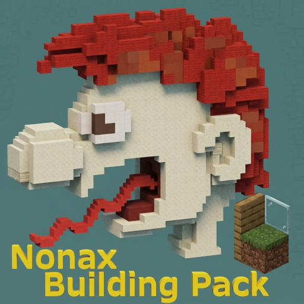

新着アドオン

Nonax Building Pack
レイヤーブロック、木材系の塀、充実したハーフ・階段ブロックなど、バニラの世界観に馴染む建築パーツを追加するアドオンです。
マイクラ統合版向けアドオンの紹介ページ一覧です。

レイヤーブロック、木材系の塀、充実したハーフ・階段ブロックなど、バニラの世界観に馴染む建築パーツを追加するアドオンです。

村人に「棟梁」職業を加え、設計図と資材を使って建築を一緒に進めるアドオン。足場や囲い、演出を備えた建築パートナー体験を目指しています。